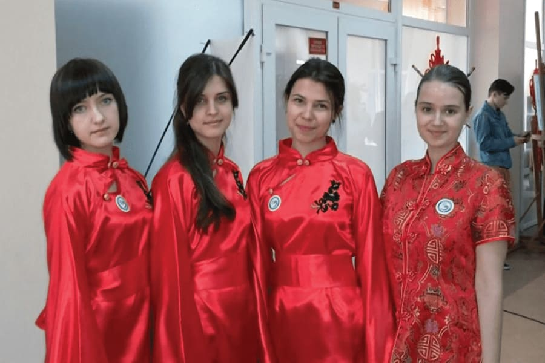

2004 рік. Керівництво МГУ вітає президента Університету
Сергія Ківалова із 50-річним ювілеєм

2006 рік. Перша посвята у студенти Університету, що була
проведена у новозбудованому навчальному комплексі

2009 рік. Відкриття Одеського медичного інституту
та медичного коледжу МГУ

2012 рік. Перемога студентів МГУ у міжнародному
конкурсі «Китайський міст»

Жовтень 2012 року. Відкриття Університетської аптеки,
фармацевтичних лабораторій та навчального корпусу МГУ

2018 рік. МГУ став переможцем у номінації
«Кращий заклад вищої освіти у сфері міжнародної діяльності»